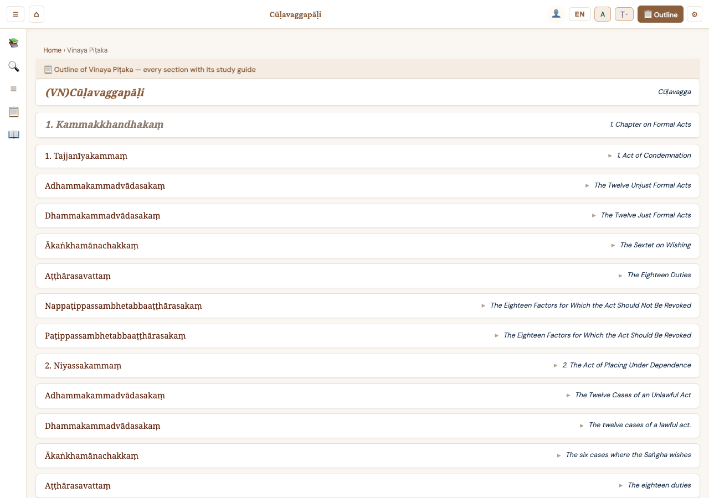
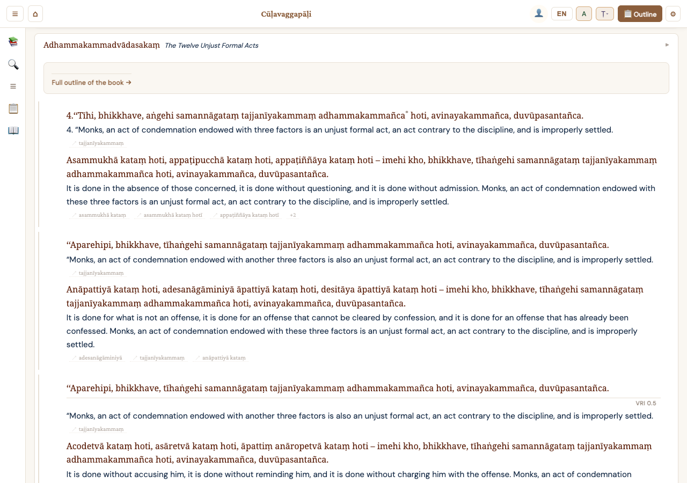
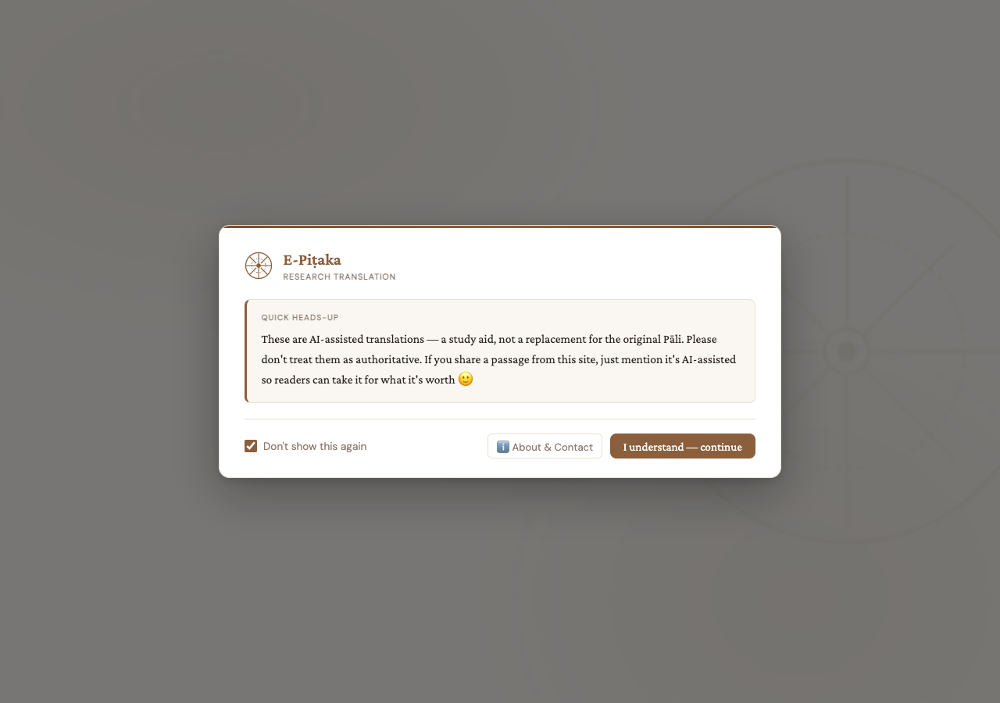
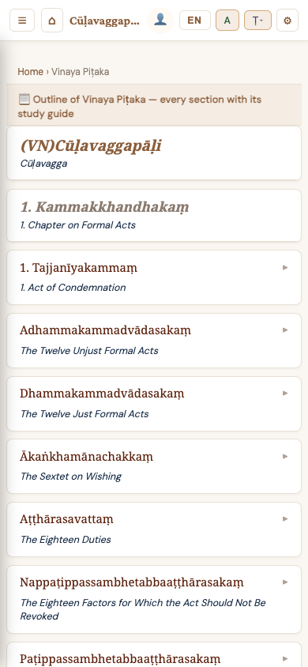
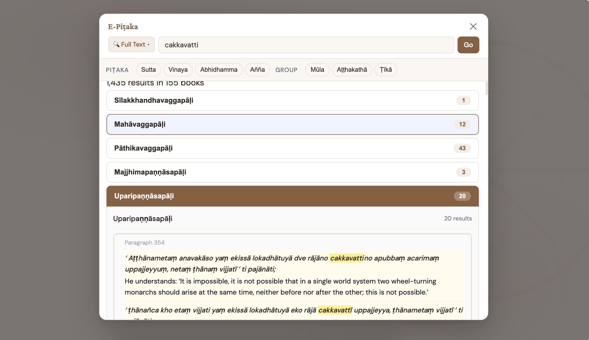
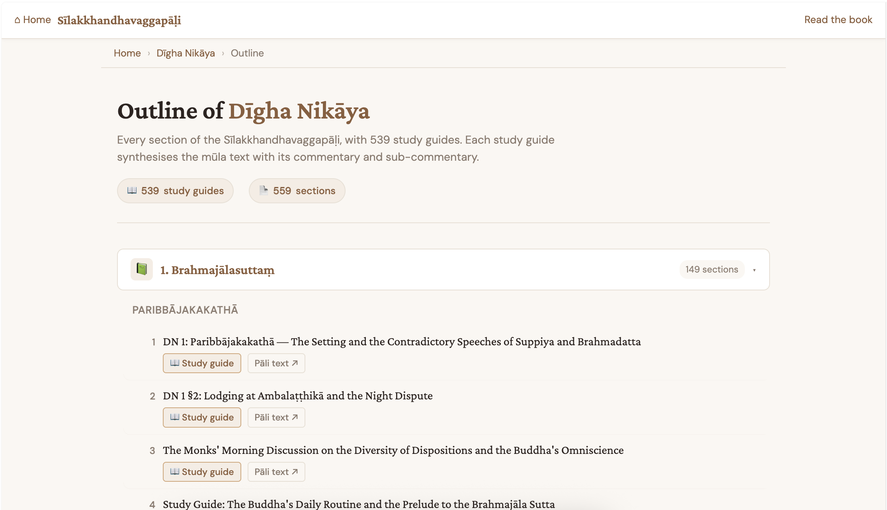

The entire Tipiṭaka with inline commentaries, AI-assisted translations, and cross-references — all in one reader.

For the first time, read the Pali Canon alongside its traditional commentaries and sub-commentaries — without switching books.
The original Pali Canon: Sutta, Vinaya, and Abhidhamma — the words attributed to the Buddha himself, preserved by the Sixth Council edition.
Traditional explanations by Ven. Buddhaghosa and other great commentators, revealing the meaning behind each passage.
Further elaborations by later scholars that clarify ambiguities and deepen understanding of the commentary itself.
Navigate the interconnected literature with a single click. M/A/Ṭ buttons track your position across all three layers simultaneously.

A careful multi-step pipeline that gathers authoritative sources, enriches with commentary context, and produces translations verified against the original Pali.
Translations collected from Bhikkhu Bodhi, Anandajoti Bhikkhu, Sinhala tipitaka.lk, Thai Mahāmakut Edition, Myanmar Nissaya, and Vietnamese sources.
Each source is algorithmically matched to the VRI paragraph structure so the same passage can be compared across all languages.
The AI receives the commentary, sub-commentary, glossary of key terms, and preceding translations for style consistency.
For each Pali sentence, the aligned sources and rich context are sent to an AI model to produce a new, synthesized translation.
The generated translation is checked again against the original Pali to catch misinterpretations before publication.
A human reader reviews results, feeds back corrections, and adjusts the process for the next cycle of improvement.
Switch the Pali text to any major Southeast Asian script instantly — Roman, Myanmar, Thai, Khmer, Lao, Sinhala, Devanagari, and more.
Full-text search across all Pali text, translations, and headings. Look up individual words with the integrated Pali dictionary.
… devā manussā ca dhammaṃ saddahanti aṭṭhanti… — "…devas and humans believe in the Dhamma, they practice it…" (English translation)
… yo hi koci bhikkhave evaṃ vadeyya — "…if anyone should say, monks…" — Aṅguttara Nikāya cross-reference
… evaṃ passaṃ rāgūpādānaṃ vā virājenti… — "…seeing thus, they let go of passion-attachment…" (Pali dictionary: upādāna = clinging)
Switch between stacked and side-by-side layouts. Adjust fonts, colors, page numbering systems, and more.
Each Pali line followed by its translation
Pali and translation side by side
Open multiple books in tabs. Swipe to switch between them. Each tab preserves its own scroll position.
Listen to the Pali text read aloud with TTS. Auto-scrolling follows along as each line is spoken.
Find conceptually related passages using AI — search by meaning, not just keywords.
Annotate passages with highlights and personal notes. Your study library, organized and accessible.
Integrated Digital Pali Dictionary with compound breakdown, etymology, and cross-references.
Navigate line-by-line with j/k keys, select links with h/l, and open with Space — vim-style reading.
E-Pitaka runs natively on desktop, tablet, and phone — with an adaptive interface that matches your screen.

Long-press to select any word. Tap to look it up in the dictionary. Swipe between tabs. The mobile experience is just as rich as desktop.



Every section comes with a structured outline and AI-generated study guide that synthesizes the root text with its commentary and sub-commentary.